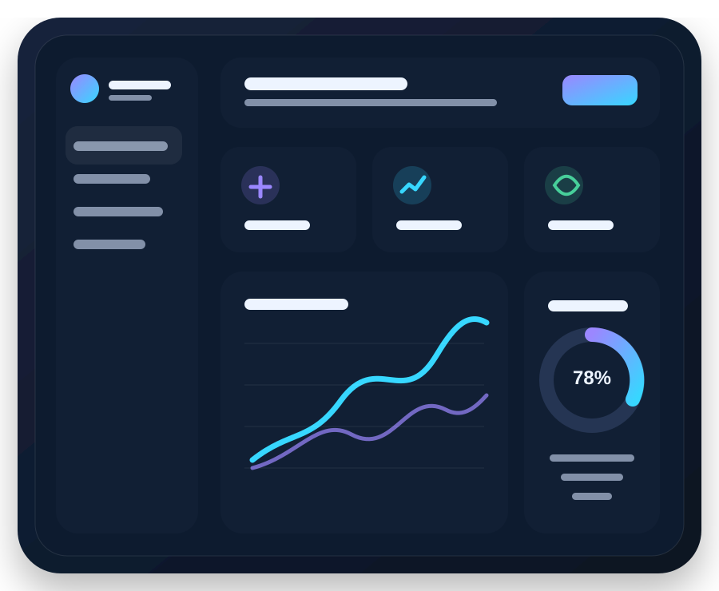
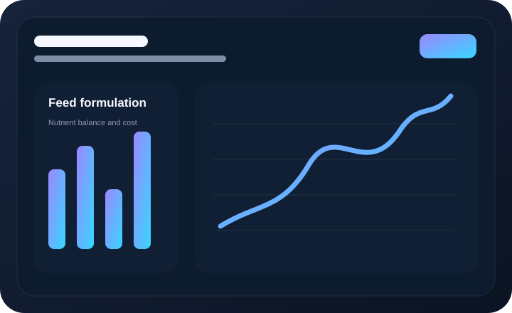
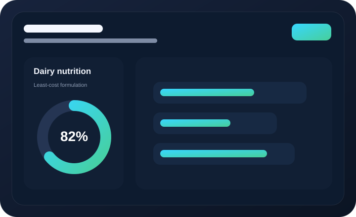
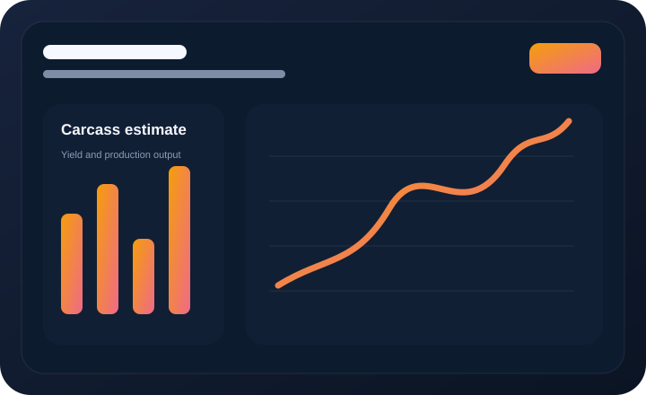
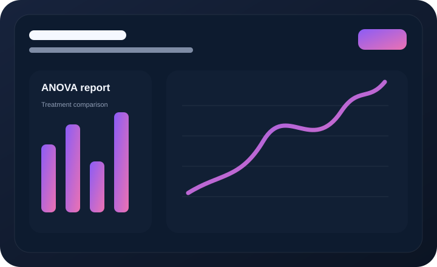
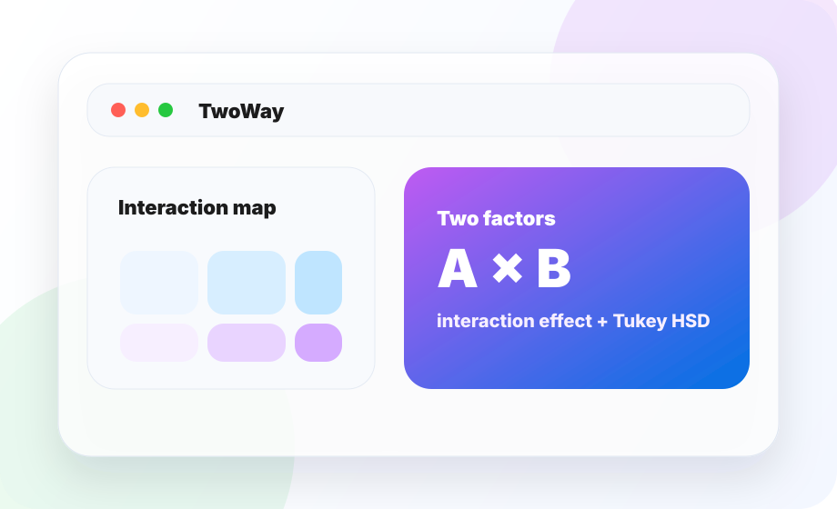
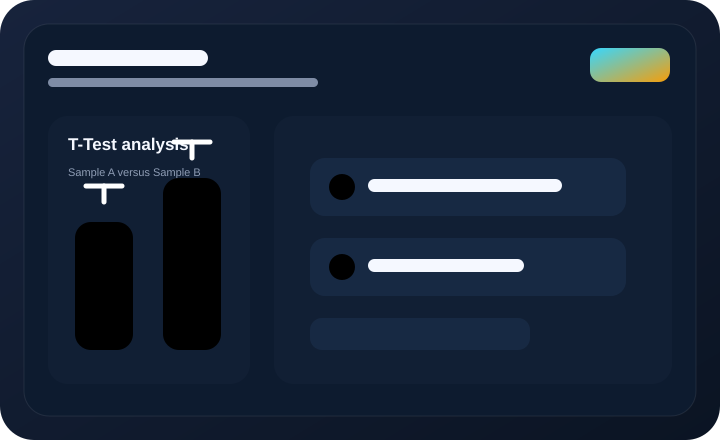

AgriTech • Statistics • Scientific Computing
Portfolio produk riset yang rapi, jelas, dan terasa premium.
Saya membangun aplikasi web untuk mengubah rumus pertanian, workflow statistik, dan data penelitian menjadi produk digital yang mudah dipakai oleh peneliti, mahasiswa, peternak, dan praktisi lapangan.

Galuh Adi
Research Tools Builder
Formulation
Analysis
Export
Professional direction
Visual dan teks dibuat sinkron: tiap gambar menjelaskan isi produknya.
Setiap kartu project sekarang punya ilustrasi yang nyambung dengan fungsinya: ransum memakai dashboard nutrisi, karkas memakai estimasi yield, ANOVA memakai chart, dan T-Test memakai perbandingan sampel. Jadi tampilannya bukan tempelan dekorasi doang.
GitHub Profile
Profil developer dibuat seperti product brief, bukan biodata kosong.
Galuh Adi Insani
@adiorany3
Developer dari Indonesia yang fokus pada software AgriTech, statistical analysis, web apps, scientific computing, dan open-source tooling.
Featured Products
Project GitHub dirapikan sebagai katalog produk.
Visual, judul, deskripsi, dan tag dibuat satu arah supaya pengunjung langsung paham fungsi tiap project tanpa harus membuka repository satu-satu.

AgriTech / Feed Optimization
ransumruminansia
Web app formulasi ransum ruminansia untuk manual formulation, optimasi linear programming, evaluasi nutrisi real-time, analisis mineral, dan kalkulasi biaya.
View repository →
Dairy Nutrition
ransumsapiperah
Tool optimasi ransum sapi perah untuk menghitung kebutuhan nutrien, menyusun formula pakan, dan mencari komposisi least-cost.
Repository →
Livestock Calculator
karkas
Kalkulator estimasi karkas dan non-karkas ternak Indonesia berbasis rumus ilmiah, dibuat untuk workflow produksi yang lebih praktis.
Repository →
Statistical Analysis
OneWay
Aplikasi One-Way ANOVA dengan post-hoc testing, effect size, assumption testing, boxplot, distribusi, dan interpretasi hasil.
Repository →
Research Analysis
TwoWay
Two-Way ANOVA untuk interaction effect, Tukey HSD, eta-squared, import data, visualisasi, dan export laporan.
Repository →
Statistical Testing
ttest
App analisis One-Sample dan Independent T-Test dengan effect size, confidence interval, visualisasi, dan interpretasi yang mudah dibaca.
Repository →Workflow
Dari rumus akademik ke produk yang bisa dipakai.
Map the domain
Pahami rumus, satuan, dataset, batasan, dan kebutuhan pengguna lapangan.
Build the engine
Ubah workflow domain menjadi kalkulasi, optimasi, dan validasi yang konsisten.
Design the interface
Buat input, output, visualisasi, dan laporan yang rapi serta tidak bikin pengguna mikir keras.
Ship & iterate
Deploy ke platform web, dokumentasikan, lalu perbaiki berdasarkan penggunaan nyata.
Main Stack
Python, TypeScript, Next.js, FastAPI, Streamlit
Stack disusun untuk kombinasi scientific computing, prototyping cepat, API development, dan product landing page modern.